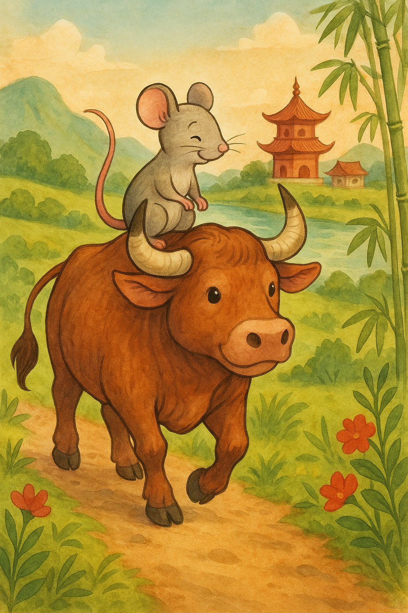
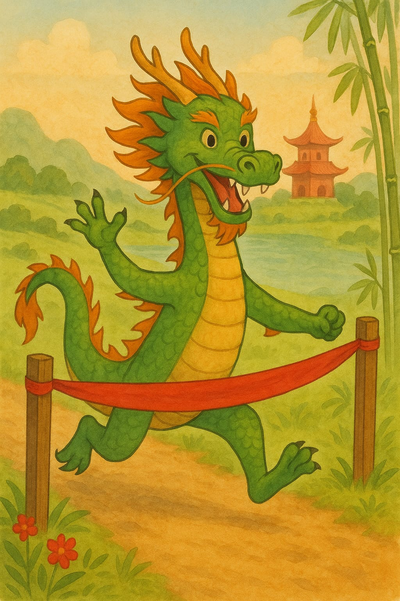

Érase una vez, el Emperador de Jade de China organizó una carrera donde doce animales competirían para dar nombre a los doce años del calendario chino.
Once upon a time, the Jade Emperor of China organized a race where twelve animals would compete to name the twelve years of the Chinese calendar.
Había invitado a todos los animales de su reino, pero solo doce aparecieron: el perro, el conejo, la rata, el dragón, el buey, la serpiente, el mono, el cerdo, el carnero, el gallo, el tigre y el caballo.
He had invited all the animals in his kingdom, but only twelve appeared: the dog, the rabbit, the rat, the dragon, the ox, the snake, the monkey, the pig, the ram, the rooster, the tiger, and the horse.
Una vez que estuvieron en la línea de salida, el emperador comenzó la carrera… ¡y partieron!
Once they were at the starting line, the Emperor commenced the race… and they were off!
Inmediatamente, la rata le preguntó al buey: “¿Quieres correr juntos? Podemos ganar fácilmente.”
Immediately, the rat asked the ox, “Do you want to race together? We can win easily.”

El buey y la rata eran mejores amigos, así que el buey, que era solidario y amable, aceptó felizmente.
The ox and the rat were best friends, so the ox, who was supportive and kind, happily agreed.
La carrera duró varios días, viajando a través de las tierras de China, hasta llegar al gran río y, finalmente, a la puerta celestial donde estaba la meta.
The race lasted several days, traveling through the lands of China, to the great river, and finally to the celestial gate where the finish line was.
Después de mucho esfuerzo, el buey y la rata estaban a punto de terminar y solo necesitaban cruzar el gran río.
After a lot of effort, the ox and the rat were about to finish and only needed to cross the great river.
Así que el buey llevó a la rata sobre su lomo a través del río hasta la última distancia.
So, the ox carried the rat on his back across the river for the final stretch.
Justo antes de la meta, la rata saltó delante del buey, cruzando primero y obteniendo el primer lugar, mientras que el buey quedó segundo.
Just before the finish line, the rat leapt ahead of the ox, crossing first and taking first place, while the ox came second.
Así, la astuta rata se alzó con el primer puesto y se convirtió en el primer animal del zodiaco, seguida de cerca por el buey.
Thus, the clever rat claimed first place and became the first animal of the zodiac, followed closely by the ox.
A pesar de todo, la rata y el buey siguieron siendo los mejores amigos.
Despite it all, the rat and the ox remained best friends.
A continuación llegó el tigre, muy agotado, que terminó la carrera únicamente gracias a su determinación, alcanzando el tercer lugar.
Next came the tiger, very exhausted, who finished the race purely through determination, earning third place.
En cuarto lugar quedó el conejo, que utilizó un tronco flotante para cruzar el río, lo que le ayudó a llegar a la meta.
In fourth place was the rabbit, who used a floating log to cross the river, which helped it reach the finish.
Detrás de él venía el dragón, quien había visto al conejo en apuros y sopló viento para ayudarlo.
Close behind came the dragon, who had seen the rabbit in need and blew wind to help it.

Cuando el Emperador de Jade le preguntó al dragón por qué no terminó la carrera más rápido con su superioridad aérea, el dragón explicó que se había distraído ayudando a una aldea que sufría una sequía, trayendo lluvia para salvarla antes de continuar la carrera.
When the Jade Emperor asked the dragon why it hadn’t finished faster with its aerial advantage, the dragon explained that it had been delayed by a village suffering from drought and had brought rain to save it before continuing the race.
El siguiente en llegar fue el caballo, que corría tan rápido que no se dio cuenta de que la serpiente se había enroscado alrededor de su pata.
The next finisher was the horse, who was running so fast that it didn’t realize the snake had coiled around its leg.
La serpiente se deslizó adelante y terminó en sexto lugar, mientras que el caballo llegó séptimo.
The snake slithered ahead, finishing sixth, while the horse came in seventh.
Según cuenta la historia, una balsa que transportaba al amable carnero, al mono juguetón y al gallo parlanchín se acercó a la meta.
As the story goes, a raft carrying the friendly ram, the playful monkey, and the talkative rooster approached the finish line.
Los tres habían trabajado juntos para cruzar el río.
The three had worked together to cross the river.
Así, el carnero obtuvo el octavo lugar, el mono el noveno y el gallo el décimo.
Thus, the ram finished eighth, the monkey ninth, and the rooster tenth.
Después de un tiempo, apareció el perro, que había disfrutado de un largo baño antes de llegar a la meta.
After some time, the dog appeared, having enjoyed a long bath before reaching the finish line.
Fue el penúltimo animal del zodiaco chino.
It was the penultimate animal of the Chinese zodiac.
Finalmente, el duodécimo animal cruzó la meta: ¡era el cerdo!
Finally, the twelfth animal crossed the line — it was the pig!
El cerdo se disculpó y explicó que había hecho un picnic a mitad de la carrera, lo que lo hizo sentir soñoliento y tomar una siesta.
The pig apologized, explaining that it had stopped for a picnic halfway through the race, which made it sleepy and led to a nap.
Cuando el cerdo cruzó la meta, la alineación del Emperador de Jade estaba completa.
When the pig crossed the line, the Jade Emperor’s lineup was complete.
El orden en que los animales terminaron se convirtió en el orden del zodiaco que celebramos hoy en el ciclo del Año Nuevo chino.
The order in which the animals finished became the zodiac order we still celebrate today during the Chinese New Year cycle.
¿En qué año naciste tú, y crees que los rasgos y personalidades de tu signo se relacionan contigo?
Which year were you born in, and do you think the traits and personalities of your sign relate to you?